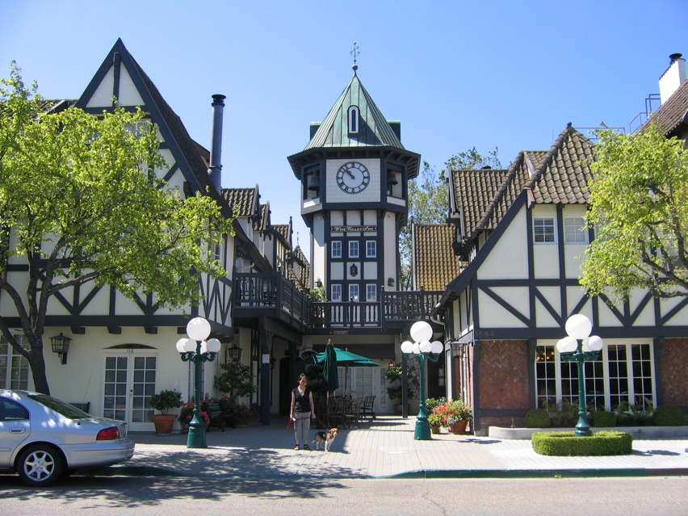

<--Previous Up Next-->

The Wine Valley Inn
Solvang was founded by Danes in 1911. In the 1950s they saw the tourist potential and rebuilt downtown with real half-timbered buildings. At the Wine Valley Inn, even a beagle can live in Olde Worlde splendor.